Viewport interface
This version of addon contains UI. All tool icons located in top tool header area
while the addon invoked. This gives ability to select or track current modes, actions.
Together with conform mouse actions it makes addon easy to use.
Interface
Friendly Pivot addon can be invoked from Toolbar panel(T-panel) by pressing 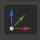 icon or by 'D' shortcut.
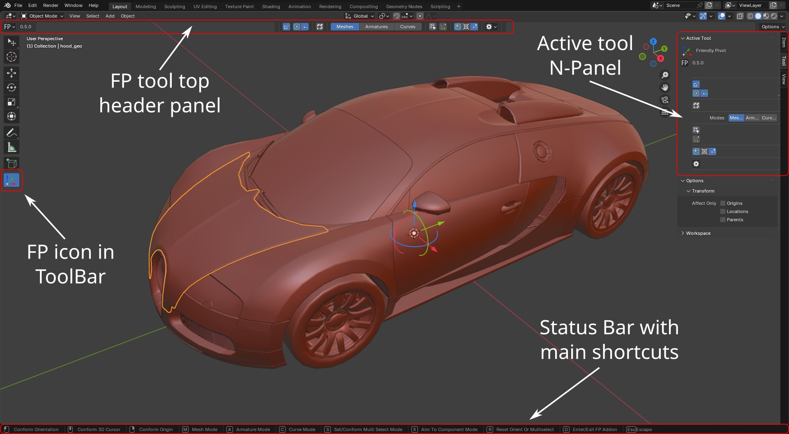
Tool header area breakdown
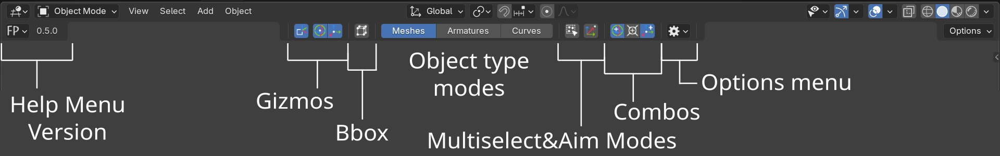
Help menu & Status Bar
This menu icon  contains Manual, Support buttons, Shortcuts memo(switched off by default) and addon version number.
Manual button leads to the addon documentation page, Support one - to discord bug reporting and supporting channel. Shortcuts memo has
full list of the addon's keys. Also while FP is active Status Bar shows main shortcuts too.
contains Manual, Support buttons, Shortcuts memo(switched off by default) and addon version number.
Manual button leads to the addon documentation page, Support one - to discord bug reporting and supporting channel. Shortcuts memo has
full list of the addon's keys. Also while FP is active Status Bar shows main shortcuts too.
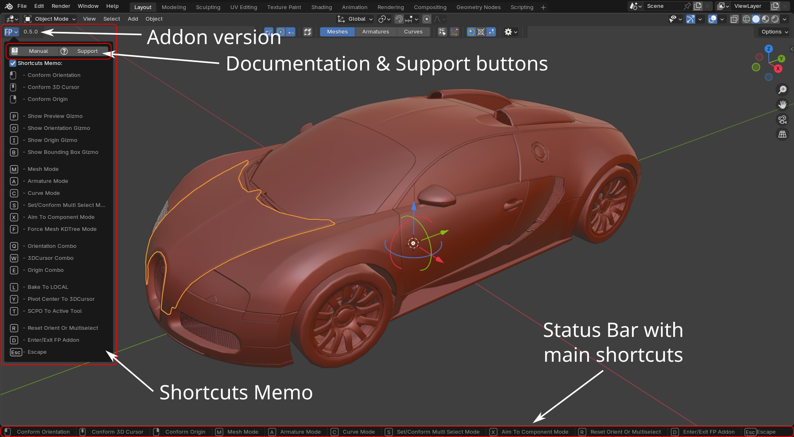
Gizmos
Preview
Switch icon . Default shortcut - 'P'.
This gizmo shows highlighted component's normal orientation. It works with Mesh, Armature and Curve modes.
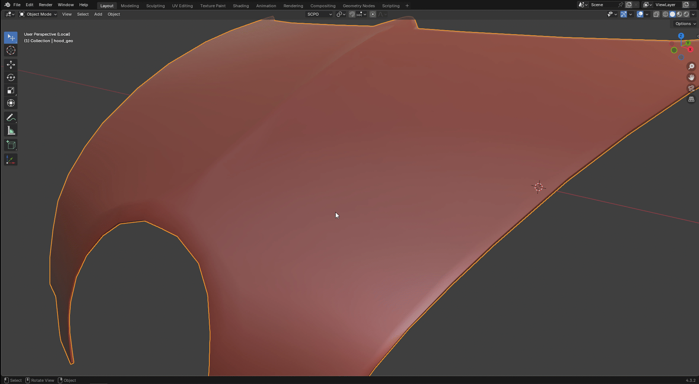
Pivot
This gizmo gives ability to set Orientation and Origin freely. Supports any Blender object type. Dial(Orientation) and Arrows(Origin)
controls can be shown together or separate by switching these 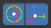 icons. Other way is pressing O(Orientation) or I(Origin) shortcuts. There is a value counting Pivot's distance('D + axis') when dragging the gizmo or current rounded value('V + axis') when rounding value.

Pressing Alt while dragging rounds current axis value to whole number. Alt + Shift combination rounds value to first decimal value for better accuracy. For Dial Pivot gizmo value is being round to nearest whole number automatic(if 1.45 => 1.0, if 1.55 => 2.0). Current rounded value is being display in the left bottom corner with V character. 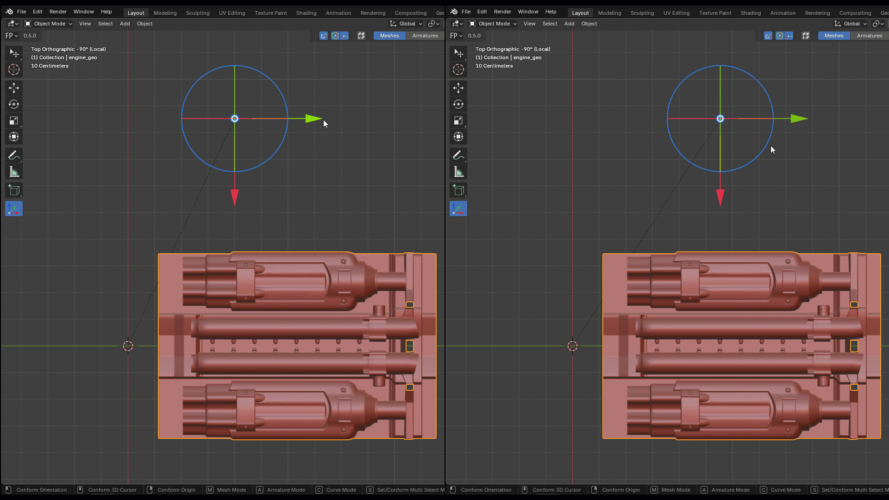
Press Shift, Ctrl or Shift+Crtl - Activate incremental system for current axis while dragging pivot gizmo. 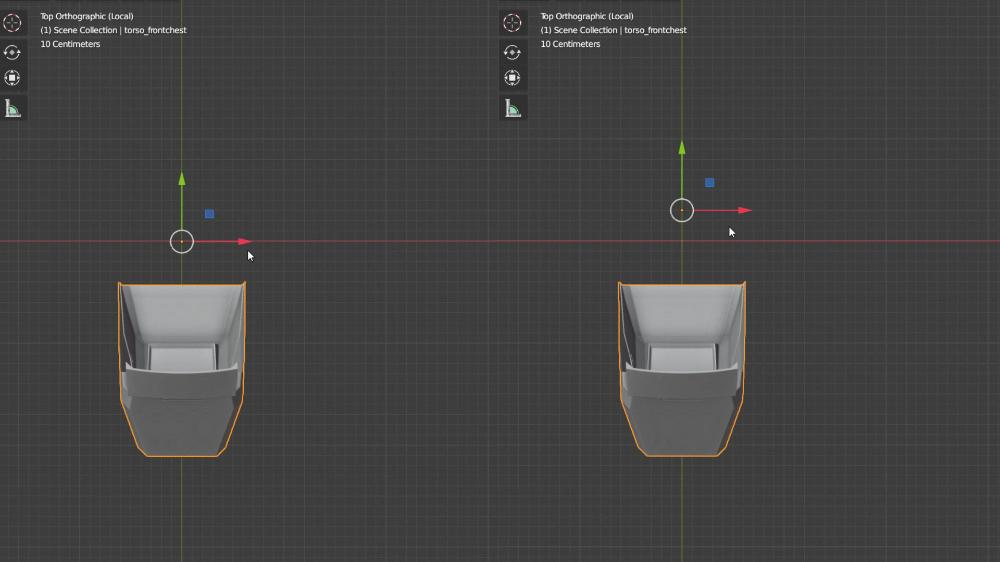
Bounding Box
With this gizmo user can set 3D Cursor or Origin to bounding box points around selected object.
To activate Bbox gizmo press B key or use this icon in top tool header. To select desire object press
LMB on it while bbox is activeThis selection works only for mesh type objects for now. Other type objects like bones, curves
need to be selected before addon invoked.
There are two transform spaces: world(default) and local. Local can be switched on by rotated box 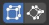
icon that is active while Bbox gizmo is on.
!WARNING - World space is heavy calculation with hipoly meshes
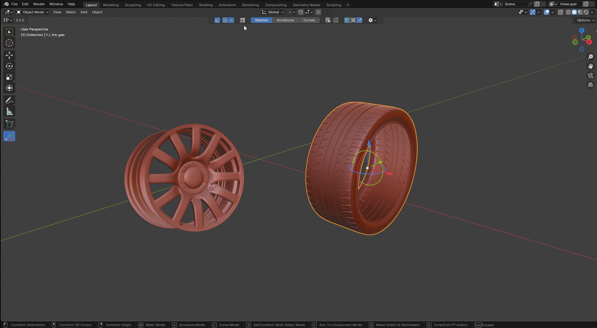
Modes
Addons modes were designed to differentiate some Blender object types and work with them separately. Current version of the tool contains 3 modes: Mesh, Armature and Curves. They all works in local view but only with selected objects instead of basic view where all visible objects can be raycasted by the addon.
Mesh
To activate it press 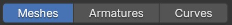 icon or M shortcut. This is the main mode for the addon that filters only mesh type objects in a scene.

Armature
Main key is A or 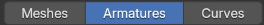 icon. This mode relates to armatures presented in a scene and can sample orientation and positions of head, end, in-between area of each visible bone. 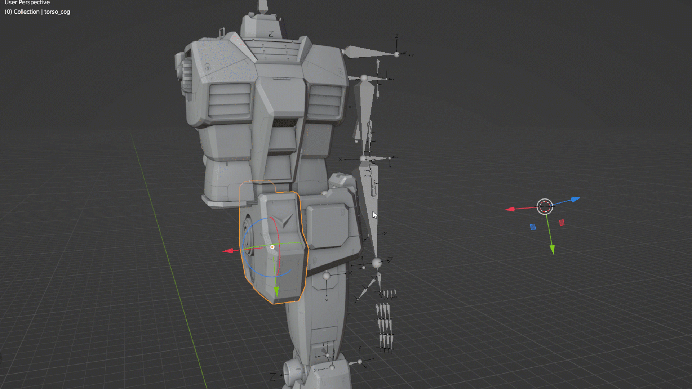
Curve
Invoke key is C ot this 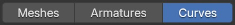 icon. In this mode user can set mainly 3D Cursor, Origin and Orientation(only with Aim and/or Multiselect modes) to curve's points. 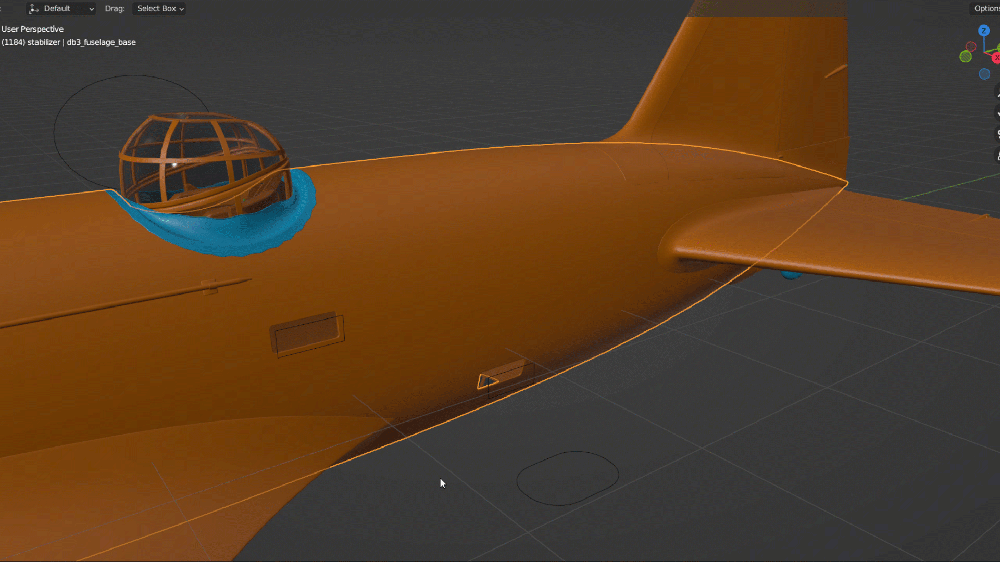
Additional Modes
These modes extend basic addon functionality by ability to sample more than one component and get their average orientation and position in a scene or change addon's behavior to rotating pivot to highlighted components instead of sampling local normals.
Multiselect
This mode designed to set Orientation, 3D Cursor and Origin between selected components of one object or multi ones by averaging selected components
orientations and positions. To activate use S key or icon. To conform selection - press them again. To select components
user can use any mouse action(LMB,MMB,RMB) but only last action is used to execute certain type of conform.
For example if last action was LMB the addon would set Orientation as main conform with respect of active combos.
Basic shortcuts:
* Press S - To activate multi selection.
* LMB, MMB, RMB - Select components
* Press S - To exit from the mode with or without comforms if no selected components
* Press R - Deselect all components.

Aim To Component
X shortcut or this 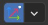 left icon switch on/off the mode that changes default orientation conform to aiming from existed pivot position to highlighted component or multiselected components' center by default X axis. 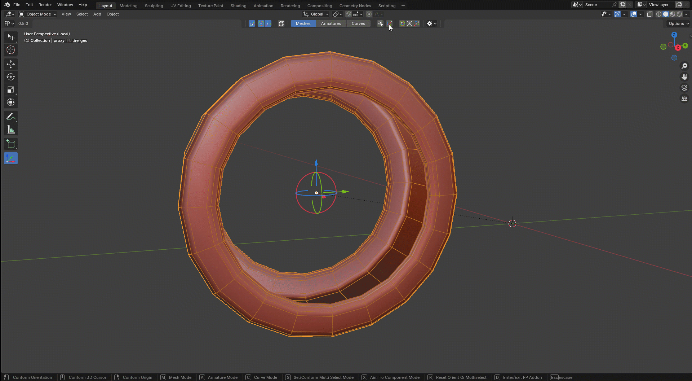
Axis can be selected from dropdown menu while Aim mode is active.
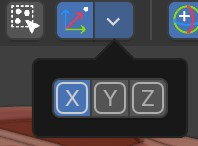
Also aim mode works with multiselect one. 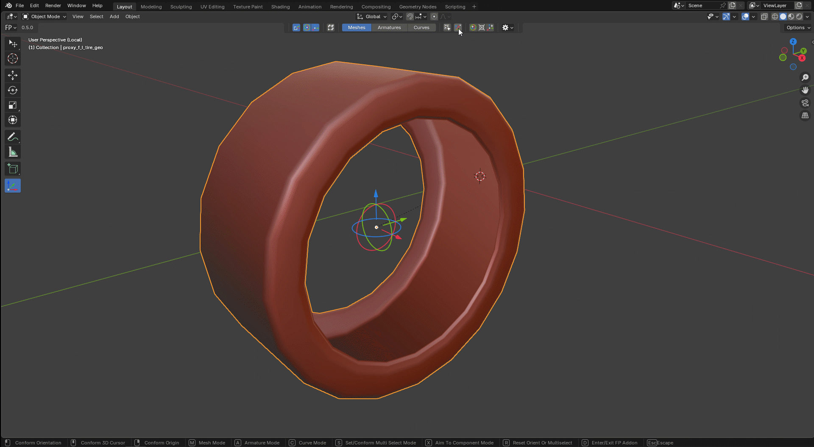
Combos
Active combos simplify few conforms to one action and can be controlled from top tool header 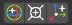 icons or shortcuts:
* Q - Orientation combo On/Off
* W - 3D Cursor combo On/Off
* E - Origin combo On/Off
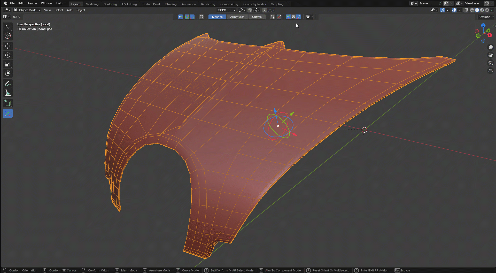
Options menu
Drop-down menu button 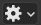 contains some additional control options that have no shortcuts and can be activated when the addon performs conform: 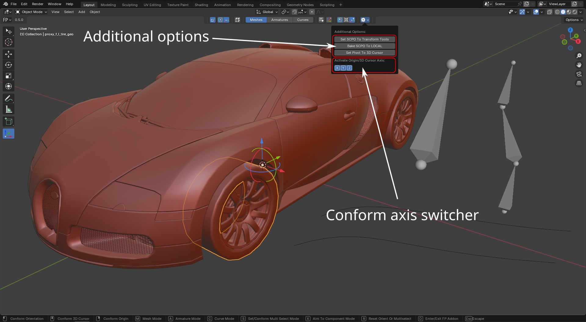
- Set SCPO To Transform Tools - Every Blender tool like Move, Rotate, Scale and Transform has its own active orientation slot. The addon sets custom orientation to these slots. 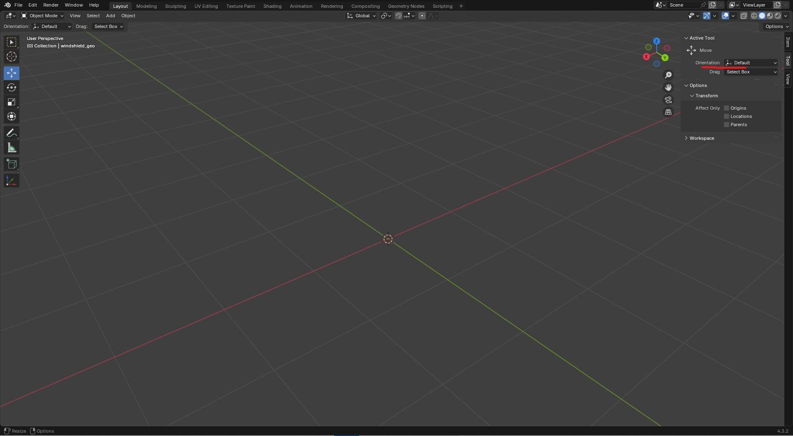
- Bake SCPO To Local - Bakes custom orientation to LOCAL one for selected objects.
- Set Pivot To 3D Cursor - Set Trasform Pivot Point to 3D Cursor.
- XYZ - This command helps to set all three axis or selected ones only before or after conform. Works only for Origin and 3D Cursor.
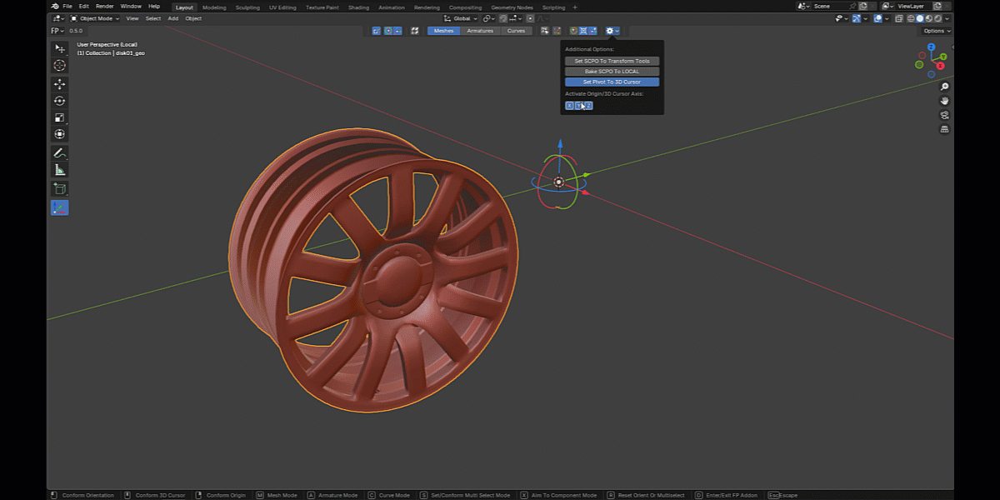